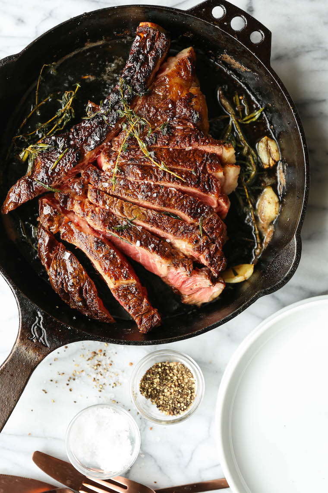

Ribeyeribeye.

Say hello to the most beautiful ribeye you have ever laid your eyes on. Perfectly crusted with foaming warm butter infused with smashed garlic cloves and fresh thyme + rosemary sprigs.
It truly is a thing of beauty.
Ingredients
- 1 24oz Bone in Ribeye steak (preferably 2in thick)
- Kosher salt and freshly ground black pepper
- Canola Oil
- 3 tbsp of butter
- 3 cloves of garlic
- 3 sprigs of thyme
- 2 sprigs of rosemary
Instructions
- Using paper towels, pat both sides of the steak dry; season generously with 1 1/4 teaspoons salt and 1/2 teaspoon pepper.
- Heat a medium cast iron skillet over medium high heat until very hot, about 1-2 minutes; add canola oil.
- Place the steak in the middle of the skillet and cook, turning every 2-3 minutes, until a dark crust has formed on both sides, about 12-14 minutes.
- Reduce heat to medium low. Push steak to one side of the skillet; add butter, garlic, thyme and rosemary to opposite side of the skillet, tilting the skillet towards the butter and cooking until butter is foaming, about 30 seconds to 1 minute.
- Working carefully, spoon butter over steak for 1-2 minutes, turning over once, until it reaches an internal temperature of 120 degrees F for medium rare, or until desired doneness. Let rest 15 minutes before slicing.
- Slice the steak against the grain and serve.